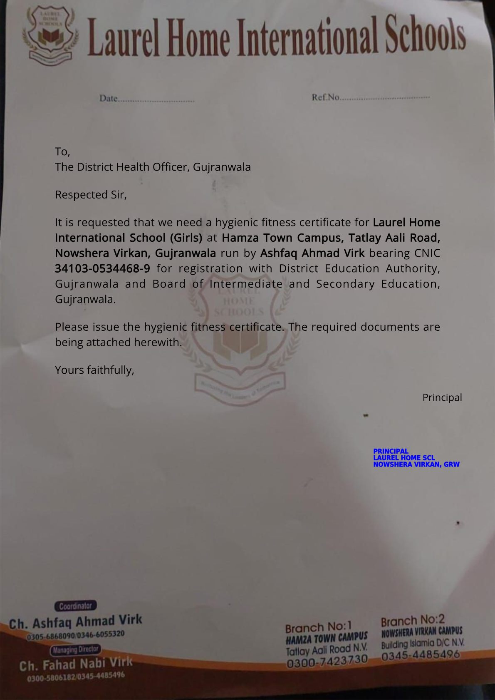
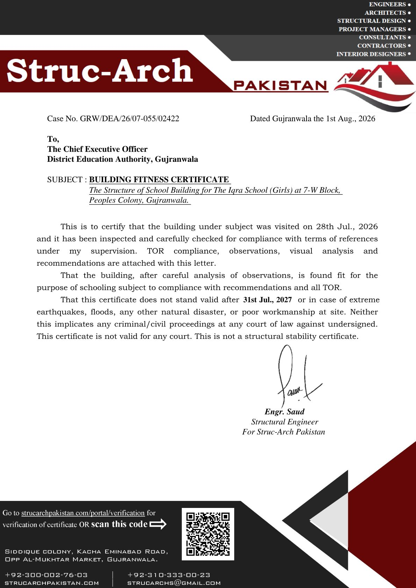

Building Fitness Certification in Punjab: A Practical Guide for Schools
Every year, hundreds of schools across Punjab are inspected, assessed and certified for structural fitness. Some pass on the first visit. Others fail - and the reason is rarely bad construction. More often, it is a missing slab record, an unapproved alteration, or a building that was never designed to carry the load it is now carrying.
Building fitness certification is the process of confirming that a structure is safe for continued use. Alongside it, schools are increasingly required to demonstrate hygienic fitness - clean, safe and serviceable premises. In Pakistan's school sector, both have become routine requirements of provincial education and works departments, and a genuine safety gate for the thousands of students who occupy these buildings every day.
If your school needs to go through this process, you are not alone - and you do not have to navigate it alone. Struc-Arch Pakistan handles the full workflow: structural and hygienic fitness certification, complete DRA file preparation, and assistance with online application submission on the School Information System (SIS). Find full details on our products page or our company site strucarchpakistan.com.
What the assessment actually covers
A fitness certification is not a paperwork exercise. A registered engineer has to form a professional opinion about the structural condition of the building. That means looking at the structure as a system, not as a set of rooms:
- Site visit and visual inspection - cracks, deflections, corrosion, settlement and signs of distress in members.
- Review of design and as-built records - available drawings, design calculations and original approvals.
- Material assessment - verification of concrete quality, reinforcement detailing and steelwork condition where accessible.
- Structural analysis - checking that members can carry the actual loads with adequate factors of safety.
- Assessment of alterations - changes made after construction that can change load paths, such as added storeys, mezzanines or heavy equipment.
- A formal report and certificate - documenting findings, remedial recommendations and the final fitness opinion.
More than 1,588 school structures were assessed and certified by our team in the first half of a single year alone through the Gujranwala DEA works ledger. The most common finding? Not failures - but missing documentation and unprotected alterations.
Why schools fail - the top reasons
Based on our field record, most conditional or failed certifications come down to a few repeatable patterns:
- No structural record. The school was built without approved drawings, and no design data exists to check against.
- Unauthorised vertical extension. An additional storey built without confirming that the foundation and columns below can carry it.
- Heavy roof loads. Water tanks, solar arrays or plant rooms placed without consideration of the slab design.
- Corrosion and leakage. Long-term water ingress degrading reinforcement and concrete cover.
- Altered members. Walls or columns cut or removed to create larger openings without proper framing.
The certification process step by step
For a school administrator, the process is straightforward when the building has records - and still solvable when it does not:
- Submit the request with the school's basic information and any available drawings or approvals.
- Site inspection by an engineer, who photographs, measures and assesses the structure.
- Analysis and verification - calculations are performed for the building as it actually exists today.
- Remedial list (if needed) - specific, prioritised corrections with cost guidance.
- Fitness certificate issued for the assessed building, with a validity period and conditions.
Our school certification service - full support at a fixed rate
Schools come to us because we do the whole job - not just the inspection. Through Struc-Arch Pakistan you get a single partner for every step:
- Hygienic fitness - assessment of hygiene and health-safety fitness of school premises, and issuance of the hygiene fitness certificate.
- Structural fitness - full stability assessment and issuance of the building fitness certificate.
- Complete DRA file preparation - every document, form and attachment assembled and checked for submission.
- Online application submission at SIS - we prepare and submit your school's application on the School Information System for you.
- Follow-up and verification - tracking until the certificate is issued, plus the public online verification portal.
Pricing: as of August 2026, we charge Rs. 25,000 for full services - covering hygienic fitness, complete DRA file preparation and assistance with online application submission at SIS. No hidden charges, a clear fixed rate, and a dedicated engineer on your file.


Get your school certified - our team will contact you
Leave your details below - including any link to your school's data or SIS application - and our team will contact you to start the process.
What a school can do to prepare
If you manage a school awaiting assessment, three things will make the process faster and more reliable:
- Dig out whatever structural documentation exists - drawings, calculation sheets, approval letters.
- Be honest about alterations made over the years, including any construction you cannot document.
- Fix obvious issues before the visit - leaking roofs, visible cracks and corroded steel.
A fitness certificate is not a decoration. It is a professional statement that students, staff and parents can rely on - and in Punjab's public sector, it is increasingly the door through which schools continue to operate and receive funding. Done properly, it protects the institution, the children inside it, and the engineers who certify it.
Need your school or commercial building assessed? Our team has certified more than 1,588 school structures across Punjab. Write to info@strucarch.com, use the form above, or visit our sites - strucarch.com and strucarchpakistan.com - to see our products, work and verification portal. We will walk you through the process.
Related services & tools
Contractors and institutions that need billing, measurement or certification documentation can explore our contractor billing & IPC preparation services, construction claims & EOT support, structural engineering services, BOQ preparation & cost estimation, quantity surveying, building fitness certification, the full range of engineering packages, and free engineering calculators for concrete, steel and quantities.
For plain-language engineering guides, visit the engineering knowledge base covering construction contracts, structural engineering, construction practice and civil engineering.